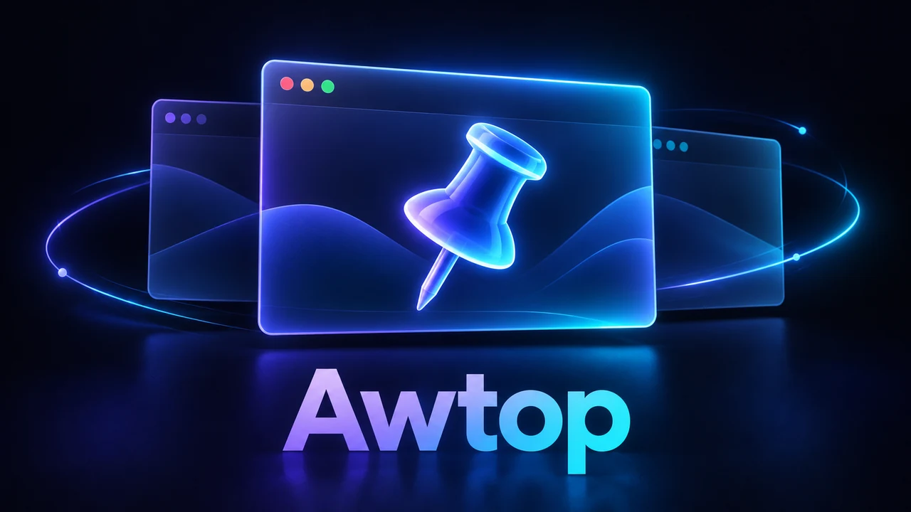
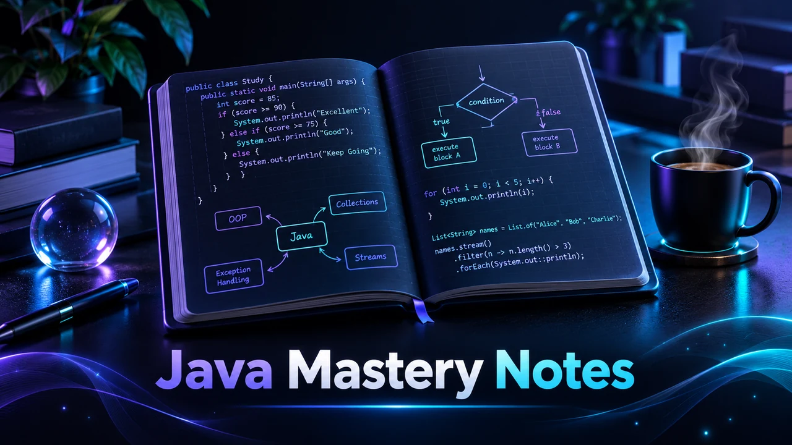
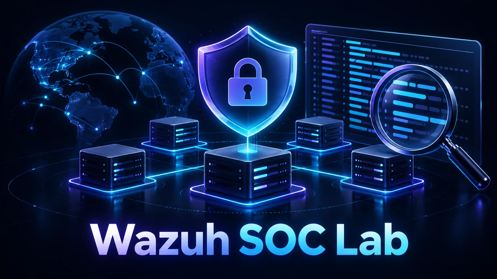

01 / Proyecto personal
CodeFlow Studio
Herramienta local de código abierto para explorar programas Java y Python mediante código, diagramas y ejecución paso a paso. Proyecto personal con documentación y descarga para Windows.
Estudiante de DAM en CES Juan Pablo II.
Una base en sistemas y redes. El foco en desarrollar.
01 — proyectos
Herramientas, apuntes y laboratorios con repositorios públicos. Cada enlace permite consultar su alcance y documentación.
Herramienta local de código abierto para explorar programas Java y Python mediante código, diagramas y ejecución paso a paso. Proyecto personal con documentación y descarga para Windows.

Utilidad para Windows que permite elegir una ventana, mantenerla por encima de las demás y retirar su prioridad. Incluye código e instrucciones de uso y compilación.

Mi recorrido por Java básico hasta arrays: apuntes organizados por conceptos, trazas, ejercicios de práctica y soluciones explicadas para comprender cada paso.
Guía paso a paso y prompts para construir con apoyo de IA un publicador de carruseles en Python mediante la API oficial de Instagram. Recurso de documentación.

Laboratorio documentado de Wazuh All-in-One sobre Ubuntu Server. Incluye instalación, configuración y una utilidad para restablecer la contraseña del administrador.
02 — sobre mí
Soy Ángel Menendez, técnico en Sistemas Microinformáticos y Redes (SMR), formado en IES Ignacio Ellacuría, y estudiante de DAM en CES Juan Pablo II, en Madrid. Mi experiencia de prácticas en sistemas y redes es la base desde la que me oriento al desarrollo de software.
Practico Java, documento lo que aprendo y construyo proyectos personales con IA como apoyo. Son proyectos personales con los que aprendo construyendo. Mi experiencia profesional corresponde a sistemas y otras responsabilidades; el desarrollo lo construyo mediante formación y proyectos propios.
YouTube
Café y Bytes
Tecnología, automatización y programación explicadas sin rodeos.
Ver canalEnfoque actual
Formarme para aportar valor
Java como foco práctico: lógica, fundamentos y programación orientada a objetos. Mi objetivo es consolidar una base de desarrollo sobre mis conocimientos de sistemas y redes.
Experiencia técnica · prácticas
Administración de redes Ubiquiti: instalación y configuración de switches, VLAN y reglas de firewall; análisis de DNS, DHCP, routing y latencia para resolver incidencias.
Gestión de usuarios y contraseñas en Windows y Linux, aplicación y ajuste de GPO para aulas y equipos docentes, y soporte de hardware y software.
Otras responsabilidades
Sampere Procuradores · Administrativo · 2 años. Digitalización documental, presentación de demandas y comunicación con clientes.
Konecta BTO, Lisboa · Ventas y coordinación · 3 meses. Coordinación de 10 personas y seguimiento de objetivos individuales y de equipo.
USA Fitness · Encargado de tienda · 1 año. Equipo de 4 personas; organización de horarios, vacaciones, compras y stock.
Mercadona · Repartidor y charcutero · Actualidad. Preparación y reparto de pedidos, gestión de mercancías y corte de jamón.
03 — formación
DAM en curso · CES Juan Pablo II. Formación previa: título de Técnico en Sistemas Microinformáticos y Redes (SMR).
Java es mi foco práctico actual. SQL y HTML/CSS forman parte de mi aprendizaje; utilizo Git/GitHub para organizar y compartir proyectos. Los niveles varían y sigo consolidando autonomía. Uso IA como apoyo para explorar soluciones y documentar, revisando los resultados.
Hoja de ruta 2026/2027: profundizar en Java y SQL, acceso a datos y Hibernate, interfaces, servicios y aplicaciones móviles. JavaScript, React, Kotlin y Python son tecnologías por explorar o consolidar; Odoo es la referencia del centro para ERP/CRM. Esta hoja de ruta no representa dominio profesional.
Formación complementaria: Desarrollo web para comercio electrónico y Administrador de oficinas, en la Escuela Superior de Informática.
Linux · Hack4u: curso de Linux. Consultar certificado ↗
04 — contacto
Si quieres hablar de mis proyectos o de oportunidades para seguir creciendo en desarrollo de software, escríbeme.
amzzdev@proton.me